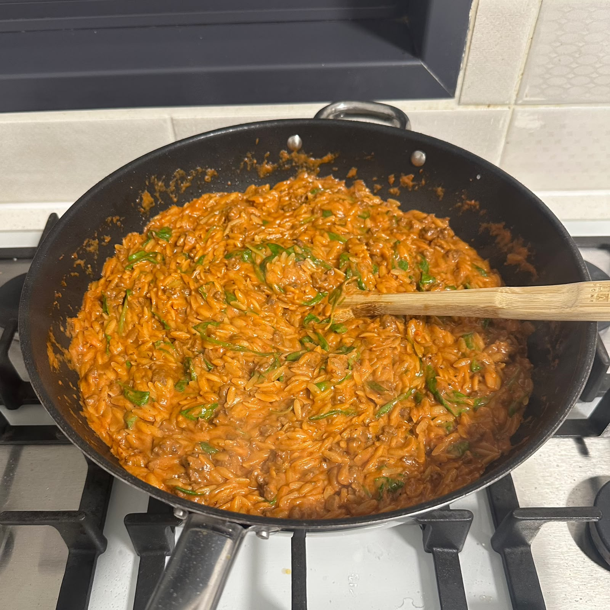

Rose Orzo

Description
This is my rose orzo with minced meat and spinach that I make, a comforting dish
created from simple healthy ingredients.
Ingredients
- 25ml olive oil
- 25g butter
- chopped medium onion
- 10g grated garlic cloves
- 500g beef mince
- 600g tomato passata
- 250ml thickened cream
- 250ml beef stock
- 500g orzo
- 100g baby spinach
- salt, pepper, and spices to taste
Steps
- Bring the onion to a golden color in the butter and olive oil in a pan
- Add the garlic for 30-60s / until fragrant
- Add the beef mince to the pot, cooking it until no longer pink
- Add the passata, thickened cream, beef stock and orzo
- bring to a boil, then reduce heat to medium and cook as per package instructions
- Add spinach and spices to taste
- Serve and enjoy!
Home